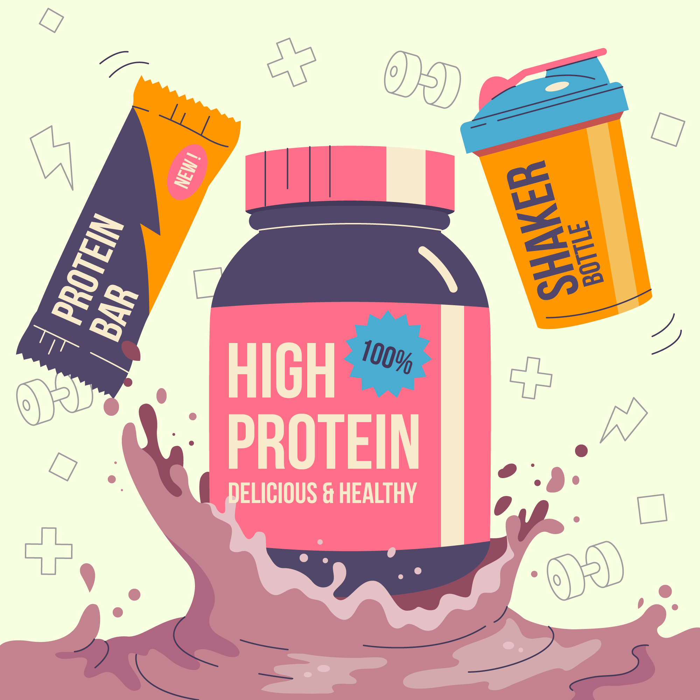

Proven To Get You Stronger
Each serving of RECHARGE contain a clinically effective dosage of the only natural molecule 100% proven to help you build muscle and strenght: creatine monohydrate.

Pricing
Some Protien flavour that can give you better experice in your workout try theme once it will give you maximum strenght in your workout and some addtional teast to your protein powder also helpfull for giving maximum protien to you without any chemical uses try it once.
499rs
- Flavour-Chocolate
- Protien-78.8%
- Fats-11.2%
699rs
- Flavour-Macha cappuchino
- Protien-80.8%
- Fats-9.2%
799rs
- Flavour-Malai Kulfi
- Protien-85.8%
- Fats-12.2%